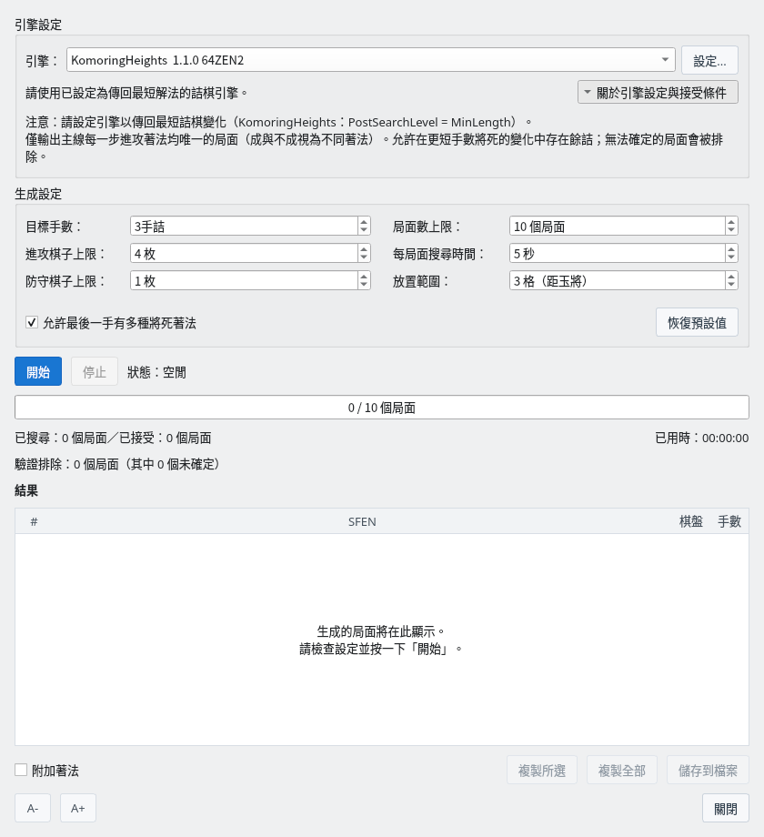
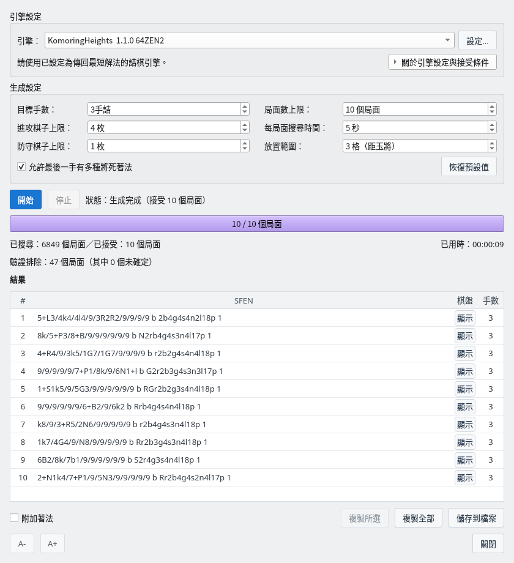
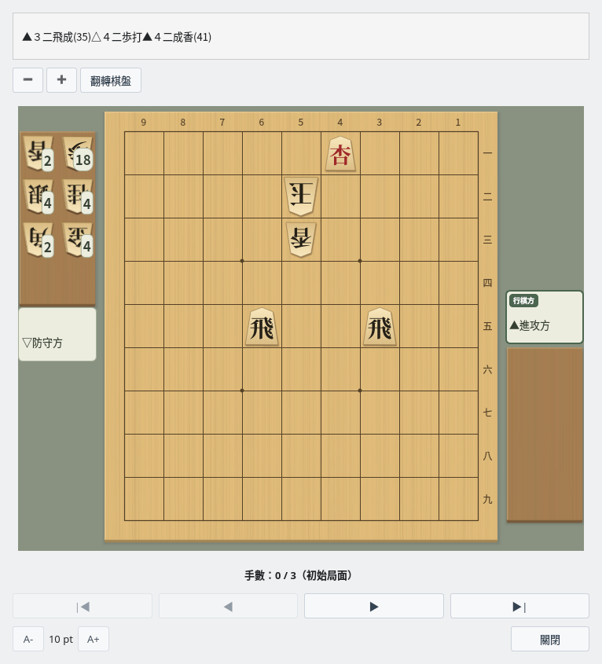

詰棋局面生成器
從隨機局面出發，以 USI 引擎確認詰殺，自動產生詰棋
截圖於 Linux 上以繁體中文介面擷取。
概要
隨機製作詰棋候選局面，檢查詰殺與餘詰後輸出
功能特色
詰棋局面生成器會自動完成以下處理。
- 隨機產生詰棋候選局面
- 以內建的詰棋搜尋篩選候選，再以 USI 引擎（
go mate）確認指定手數的詰殺 - 檢查主線的餘詰和多餘棋子，只輸出符合條件的局面
- 以 SFEN 格式列出結果，可以儲存到檔案或複製到剪貼簿
詰棋搜尋可以使用 komori-n 開發並公開的詰棋引擎 KomoringHeights。請另行準備引擎，在「設定」→「引擎設定…」中註冊（引擎註冊指南），然後在生成對話方塊的「引擎」中選擇。請使用傳回最短手順的設定（KomoringHeights 為 PostSearchLevel = MinLength，即預設值）。
生成設定
在生成對話方塊中設定條件並開始產生
詰棋局面生成器對話方塊
選擇「對局」→「詰棋局面生成器…」開啟對話方塊，確認引擎和生成設定後按一下「開始」。設定下次也會沿用。

詰棋局面生成器對話方塊：展開「關於引擎設定與接受條件」的狀態
| 項目 | 說明 |
|---|---|
| 引擎 | 用於詰棋搜尋的 USI 引擎。按一下「設定...」可以變更所選引擎的選項。 |
| 目標手數 | 產生的詰棋手數（奇數）。預設是 3 手詰。 |
| 進攻棋子上限 | 進攻方棋盤上的棋子與持駒合計枚數的上限。預設是 4 枚。 |
| 防守棋子上限 | 除玉以外，防守方棋盤上棋子枚數的上限。預設是 1 枚。 |
| 局面數上限 | 接受的局面達到這個數量後結束。預設是 10 個局面；設為 0（不限）時會一直產生，直到停止。 |
| 每局面搜尋時間 | 候選局面及移除棋子後的詰棋搜尋、以及各自完整的餘詰檢查所用的時間。預設是 5 秒，未能在時間內完成檢查的局面不會被接受。 |
| 放置範圍 | 以玉為中心放置進攻棋子的範圍（格數）。預設是 3 格。 |
| 允許最後一手有多種將死著法 | 開啟時，即使主線最後一手有多種將死著法也會接受（1 手詰的第一手除外）。關閉時，只輸出最後一手也唯一的局面。第一手等主線中途的餘詰一律排除。 |
| 恢復預設值 | 將生成設定恢復為預設值。 |
按一下「關於引擎設定與接受條件」可以展開或收合關於引擎設定和接受條件的說明。
產生過程中可以按一下「停止」停止產生。停止後，已接受的局面仍可儲存和複製。
隨機局面的產生方式
局面依以下步驟自動製作。
- 將後手的玉放在 9×9 棋盤上的隨機位置
- 在玉的周圍放置進攻棋子（隨機分配到棋盤上或持駒）
- 在玉的周圍放置防守棋子
- 省略進攻方的玉，其餘未使用的棋子全部加入防守方（後手）的持駒
- 確認初始局面中玉沒有被將軍
製作出的局面先由內建的詰棋搜尋篩選，排除已知在目標手數內無法將死的局面，以及找到多個將死第一手的局面。內建搜尋無法判定的候選也會傳送給 USI 引擎，只有引擎確認了指定手數詰殺的局面才會進入餘詰檢查。「已搜尋」的局面數也包括被內建搜尋排除的局面。
生成結果
接受的詰棋會加入結果清單
結果清單
找到指定手數的詰殺後，完成多餘棋子修剪和餘詰檢查的局面會加入結果清單。進度列顯示已接受的局面數與局面數上限，下方顯示已搜尋和已接受的局面數、已用時間，以及驗證排除的局面數（其中未確定的數量）。

生成結果：以預設設定接受了 10 個 3 手詰局面
| 操作 | 說明 |
|---|---|
| 顯示（「棋盤」欄） | 在主要變化顯示視窗中確認局面和詰殺手順。按兩下該列或按 Enter 鍵也可以開啟。 |
| 附加著法 | 開啟時，儲存和複製的 SFEN 後面會加上 moves 和 USI 格式的詰殺手順。 |
| 複製所選 | 將選擇的局面複製到剪貼簿（Ctrl+C）。按住 Ctrl 或 Shift 鍵可以多選。 |
| 複製全部 | 將所有局面複製到剪貼簿。 |
| 儲存到檔案 | 儲存為文字檔。檔案開頭會以「#」開頭的註解列記錄 ShogiBoardQ 的版本、產生日期時間和生成設定。SFEN 局面集檢視器和詰棋練習讀取時會略過註解列。 |
修剪多餘棋子
修剪多餘棋子會自動移除隨機局面中的「裝飾棋子」（移除後不影響詰殺手順的棋子）。
- 逐枚嘗試移除棋盤上進攻方與防守方的棋子，以及進攻方的持駒
- 如果移除後仍保持目標手數的詰殺和主線的唯一性，就確定移除
- 移除的棋子移到防守方的持駒中，保持棋子總數不變
- 每移除一枚就重新檢查，把新變得多餘的棋子也移除
- 移除後的檢查逾時或無法判定的題目，以及因停止或錯誤而中斷修剪的題目不會輸出
這裡確認的是「移除任一枚棋子後，是否仍成立同樣條件的詰棋」。不保證同時移除多枚棋子或改變配置時的最少棋子數。
確認詰殺手順
在棋盤上確認產生的詰棋手順
主要變化顯示視窗
在結果清單中按一下「顯示」，即可開啟主要變化顯示視窗。上方顯示詰殺手順，下方顯示局面，對局者為進攻方和防守方。按一下「▶」逐手前進，按一下「▶|」前進到詰殺的局面。操作詳情請參閱詰棋搜尋的主要變化顯示。

主要變化顯示：產生的 3 手詰的初始局面（手數 0 / 3）
以 CLI 產生詰棋
從準備 generate-tsume，到以 Python 平行執行、儲存和重新驗證
準備 CLI 和詰棋搜尋引擎
generate-tsume 使用與 GUI 相同的生成處理，以 JSON Lines 輸出已檢查指定手數詰殺、主線餘詰和多餘棋子的局面。可以從 Python 直接以子程序啟動 CLI，不需啟動 MCP 伺服器。
以下是使用 Linux shell 和 Python 3 的範例，請在儲存庫根目錄執行。從原始碼準備的方法請參閱在 Linux 上建置。在 Windows 等環境中，請依環境變更 CLI 執行檔的名稱和路徑。
建置 CLI 並確認已註冊的引擎
cmake -B build -S . -DCMAKE_BUILD_TYPE=Release
cmake --build build --target shogiboardq-cli --parallel 4
./build/shogiboardq-cli list-engines請先註冊引擎，選擇支援 go mate 的引擎。--engine 指定的不是執行檔路徑，而是 list-engines 傳回的註冊名稱。下面的名稱只是範例，請連同空格一起換成實際的註冊名稱。
使用 KomoringHeights 時，可以在引擎設定中把 Threads=1、USI_Hash=256、PostSearchLevel=MinLength、GenerateAllLegalMoves=true 作為平行執行的初始設定。支援的選項名稱和值請在所用引擎中確認。
產生一批並確認 JSON Lines
先產生最多 10 題 3 手詰，確認引擎設定和輸出。標準輸出的 JSON Lines 與附手順的題集文字是不同的格式。
產生最多 10 題 3 手詰
./build/shogiboardq-cli generate-tsume \
--engine 'KomoringHeights 1.1.0 64ZEN2' \
--target-moves 3 --max-positions 10 \
--timeout-ms 5000 --max-attack 4 --max-defend 1 \
--attack-range 3 --stdin-control > tsume-batch.jsonl| 選項 | 含義與取值範圍 |
|---|---|
--target-moves | 目標手數。1～19 的奇數，預設 3 |
--max-positions | 一次啟動產生的上限。1～100，預設 10 |
--timeout-ms | 候選搜尋、移除棋子和餘詰檢查所用的時間預算。500～60000 毫秒，預設 5000 |
--max-attack | 進攻方棋盤上與持駒合計的上限。1～10，預設 4 |
--max-defend | 玉以外防守方棋盤上棋子的上限。0～10，預設 1 |
--attack-range | 以玉為中心放置進攻棋子的範圍。1～8 格，預設 3 |
--stdin-control | 標準輸入收到 stop 列或 EOF 時停止 |
--no-final-alternatives | 最後一手有多種解時也不接受。省略時允許最後一手有多種解 |
--no-remaining-to-hand | 不把未使用的棋子加入防守方持駒。一般的詰棋請省略 |
started 表示設定，progress 表示產生、發現、排除和未確定的數量，position 表示接受的局面，finished 表示結束。要儲存的局面和手順從 position.sfen 和 position.pv（USI 著法陣列）中取出。也請確認 error 事件和程序的結束代碼。
position 事件的主要欄位
{"event":"position","sfen":"9/8k/7P1/9/7R1/9/9/9/9 b r2b4g4s4n4l17p 1","pv":["2c2b+","1b1c","2e2c+"]}加上 --stdin-control 時，在終端機輸入 stop 並按 Enter 即可停止。關閉標準輸入也會停止，因此 Python 中要一直保持 stdin=PIPE 開啟。在一開始就關閉輸入的執行環境中，產生可能會立即結束。
從 Python 平行執行並儲存中間結果
將下面的程式碼儲存為 generate_tsume_parallel.py，在儲存庫根目錄執行 python3 generate_tsume_parallel.py。不需要額外的 Python 套件。請先以 TARGET=10、WORKERS=1 確認，如果 CPU 和記憶體有餘裕再增加平行數。
PLIES 是手數，TARGET 是所有工作程序合計的收集目標，WORKERS 是同時啟動的數量。TIMEOUT_MS、棋子數和放置範圍也可以在開頭變更。超過 100 題時，也會把每批的上限控制在 100 以內，反覆收集不足的部分。
顯示 Python 程式碼（以 4 個平行收集 100 題 3 手詰）
generate_tsume_parallel.py
import asyncio
import json
import os
from pathlib import Path
CLI = str(Path("build/shogiboardq-cli").resolve())
ENGINE = "KomoringHeights 1.1.0 64ZEN2" # Use the exact name from list-engines
PLIES = 3
TARGET = 100
WORKERS = 4
TIMEOUT_MS = 5000
MAX_ATTACK = 4
MAX_DEFEND = 1
ATTACK_RANGE = 3
ALLOW_FINAL_ALTERNATIVES = True
OUTPUT = Path(f"tsume-work/tsume_{PLIES}ply_candidates.txt")
ENV = dict(os.environ)
# Optional: use a separately prepared configuration on Linux
# ENV["XDG_CONFIG_HOME"] = "/path/to/tsume-config"
positions = {}
active = set()
def remember(sfen, pv):
fields = sfen.split()
if len(fields) != 4 or len(pv) != PLIES:
raise ValueError("Invalid SFEN or PV length")
key = " ".join(fields[:3]) # Board, turn, and hands; ignore the move number
if key not in positions and len(positions) < TARGET:
positions[key] = sfen + " moves " + " ".join(pv)
def checkpoint():
temporary = OUTPUT.with_suffix(".tmp")
text = "# CLI candidates (before independent collection validation)\n"
text += "\n".join(positions.values()) + "\n"
temporary.write_text(text, encoding="utf-8")
temporary.replace(OUTPUT)
async def stop(process):
if process.returncode is None:
try:
process.stdin.write(b"stop\n")
await process.stdin.drain()
except (BrokenPipeError, ConnectionResetError):
pass
async def close_process(process):
await stop(process)
try:
await asyncio.wait_for(process.wait(), timeout=15)
except asyncio.TimeoutError:
process.kill()
await process.wait()
active.discard(process)
async def worker(number):
while len(positions) < TARGET:
args = [
CLI, "generate-tsume", "--engine", ENGINE,
"--target-moves", str(PLIES),
"--max-positions", str(min(100, TARGET - len(positions))),
"--timeout-ms", str(TIMEOUT_MS),
"--max-attack", str(MAX_ATTACK), "--max-defend", str(MAX_DEFEND),
"--attack-range", str(ATTACK_RANGE), "--stdin-control",
]
if not ALLOW_FINAL_ALTERNATIVES:
args.append("--no-final-alternatives")
log_path = OUTPUT.parent / f"worker-{PLIES}ply-{number}.jsonl"
err_path = OUTPUT.parent / f"worker-{PLIES}ply-{number}.stderr.log"
with log_path.open("a", encoding="utf-8") as log, err_path.open("ab") as err:
process = await asyncio.create_subprocess_exec(
*args, env=ENV,
stdin=asyncio.subprocess.PIPE,
stdout=asyncio.subprocess.PIPE, stderr=err,
)
active.add(process)
try:
# Another worker may have reached the target during startup.
if len(positions) >= TARGET:
await stop(process)
async for raw in process.stdout:
line = raw.decode("utf-8")
log.write(line)
log.flush()
event = json.loads(line)
if event["event"] == "error":
raise RuntimeError(event["message"])
if event["event"] != "position":
continue
remember(event["sfen"], event["pv"])
checkpoint()
print(f"{len(positions)}/{TARGET}", flush=True)
if len(positions) == TARGET:
await asyncio.gather(*(stop(p) for p in list(active)))
if await process.wait() != 0:
raise RuntimeError(f"CLI failed; see {err_path}")
finally:
await close_process(process)
async def main():
if TARGET < 1 or WORKERS < 1:
raise ValueError("TARGET and WORKERS must be positive")
OUTPUT.parent.mkdir(parents=True, exist_ok=True)
if OUTPUT.exists():
for line in OUTPUT.read_text(encoding="utf-8").splitlines():
if line and not line.startswith("#"):
sfen, moves = line.split(" moves ", 1)
remember(sfen, moves.split())
tasks = [asyncio.create_task(worker(i)) for i in range(WORKERS)]
try:
await asyncio.gather(*tasks)
finally:
for task in tasks:
task.cancel()
await asyncio.gather(*tasks, return_exceptions=True)
await asyncio.gather(*(close_process(p) for p in list(active)))
checkpoint()
print(f"Collected: {OUTPUT} (validate the collection separately)")
if __name__ == "__main__":
asyncio.run(main())所有工作程序共用一個字典，排除棋盤、行棋方和持駒相同的 SFEN。每次發現時透過暫存檔替換來儲存，重新啟動時讀回。JSON Lines 和標準錯誤依手數和工作程序分別保存。收集到所需數量後會向所有 CLI 傳送停止要求；中途按 Ctrl+C 時，也可以從已儲存的結果繼續。
這段程式碼只負責收集和排除重複的 SFEN，不會排除只有棋子種類不同的相同手順或左右翻轉的相似題目。請另行對整個題集進行獨立稽核。
執行、停止和繼續時的注意事項
- 整體完成時間：
--timeout-ms不是整個指令的時間限制。長手數或嚴格的設定下接受的題目較少，無法保證達到目標數量所需的時間。請先以少量確認進度，必要時停止並調整條件。未確定的結果既不算無詰，也不算驗證成功。 - CPU 與記憶體：平行數和引擎內的執行緒數都會影響負載。給 16 個程序各分配 256 MiB 的雜湊表時，僅雜湊表就約需 4 GiB，此外還需要其他記憶體。
- 設定檔：看不到在 GUI 中註冊的引擎時，請確認是否以同一使用者、同一設定執行。在 Linux 上變更
XDG_CONFIG_HOME時，請在其下的ShogiBoardQ/ShogiBoardQ.ini中準備引擎註冊和選項，並以同樣的環境變數執行list-engines和 Python。 - 繼續使用的檔案：不要讓多個 Python 程序同時更新同一個
OUTPUT。範例程式碼不會重新驗證已有的列，因此變更手數、引擎或餘詰條件後，請使用新的輸出位置，或重新驗證已有的部分。設定也可以在started事件的記錄中確認。 - 餘詰條件：預設允許主線最後一手的多種解，以及更早將死的變化中的另一種詰法。若要求最後一手也唯一，請設定
ALLOW_FINAL_ALTERNATIVES=False，重新驗證時也加上--no-final-alternatives。 - 區分輸出：
tsume-batch.jsonl是事件記錄。Python 產生的tsume-work/tsume_3ply_candidates.txt是局面和手順的收集檔。CLI 出錯時，請查看該工作程序的 JSON Lines 和標準錯誤記錄。
附手順文字的格式與重新驗證
題集使用 UTF-8，每列儲存為 SFEN moves USI著法…。在以 # 開頭的註解中記錄產生日期、引擎、手數、棋子數與搜尋時間、餘詰條件，便於日後確認。
3 手詰的儲存格式（每列一題）
9/8k/7P1/9/7R1/9/9/9/9 b r2b4g4s4n4l17p 1 moves 2c2b+ 1b1c 2e2c+要重新檢查主線的餘詰，請使用 verify-tsume。下面是一個局面的範例。重新檢查多題時，請依序傳入收集檔中的各個 SFEN。
重新檢查局面的餘詰
./build/shogiboardq-cli verify-tsume \
--engine 'KomoringHeights 1.1.0 64ZEN2' \
--target-moves 3 --timeout-ms 15000 \
--sfen '9/8k/7P1/9/7R1/9/9/9/9 b r2b4g4s4n4l17p 1'JSON 中的 ok 表示指令處理是否成功。要視為合格，還需確認 status 為 unique；unknown 應暫緩或重試。這個指令只檢查主線的餘詰，不能取代對已儲存 PV 的全部著法和全部棋子必要性的稽核。
要獨立稽核題集，可以使用原始碼中附帶的以下工具確認最短手數、合法手順、主線餘詰和全部單枚移除。該工具的 --engine 不是 CLI 的註冊名稱，而是引擎執行檔的路徑。
獨立稽核收集檔
cmake -B build -S . -DBUILD_TESTING=ON
cmake --build build --target tsumeshogi_collection_auditor --parallel 4
python3 scripts/audit_tsume_collections.py tsume-work/tsume_3ply_candidates.txt \
--engine /path/to/KomoringHeights-by-gcc \
--output-dir tsume-work/audit-3ply --workers 4 --timeout-ms 30000請確認 summary.json 中的 statuses、unique_minimal、changed。不要把 unknown 計入完成數量，請增加預算重試或將其排除。確認過的結果儲存在 tsume_3ply_minimal.txt 中。如果因移除棋子後的重複或排除相似題目導致數量減少，請補充後重新稽核。詳細的檢查條件請參閱題集的 README（日文）。
多餘棋子檢查確認的是不存在能維持接受條件的單枚移除，不保證同時移除多枚或變更棋子種類時的最少棋子數。
編排不連續出現相似題目的題集
除了驗證局面，還要確認解題手順的相似性和出題順序
不僅檢查局面重複，也檢查手順相似
即使 SFEN 不同，也可能因相同的追殺方式、左右翻轉、配置平移、金與成桂等替換而使解法相似。僅靠標準 CLI 和上面 Python 範例的局面去重，無法保證題集的多樣性。
以題集編輯工具篩選和補充
scripts/refill_diverse_tsume.py 以已驗證的題集為輸入，在所有工作程序間共用相似判定並產生不足的部分。它使用與標準 CLI 不同的專用候選生成器和稽核器。補充後以 scripts/audit_tsume_collections.py 進行獨立稽核，判定全部確定後，再以 scripts/publish_diverse_tsume.py 依減少與前 10 題手順重疊的順序排列。
相似判定是基於主線的編輯標準，並不能完整判定包含變化和迷惑手在內的作品價值。輸入條件、繼續、排除和儲存的步驟請參閱題集的 README（日文）。